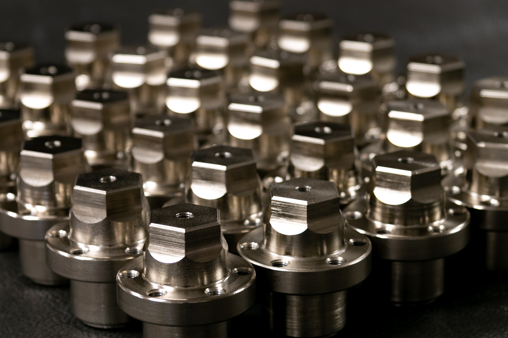

A standard is just a line that asks you to do something and write it down.
Open ISO 13485 and you see hundreds of pages. Read it one line at a time and every line asks for the same two things, an action and the record that proves you did it.

I explained our entire company to a stranger last week in one sentence, and it worked, which surprised me, because it normally takes me a diagram and about twenty minutes.
He has been in medical devices for thirty five years, and I had half an hour with him, and I had already skipped the introductions by mistake, which I always do, so I went straight to it and told him "a standard is a line of text that asks you to perform an action in a particular way that produces a record as proof that you did it in that particular way".
That is the whole thing, and it is also exactly what a standard operating procedure is and what a work instruction is, because each one takes a single line out of the standard, says here is what we are going to do about it, and then creates the record that proves we did.
Why it feels bigger than it is
When you open ISO 13485 or the MDR for the first time, what you see is volume, hundreds of pages of clauses written in the register of law and cross-referencing each other, and you are a founder with a device to build and a runway to survive.
So it reads as a hurdle, and people avoid hurdles, especially the expensive ones.
But the volume is a formatting problem rather than a complexity problem. What you are looking at is a very long list of simple tasks, repeated over and over, where you do this thing and keep the evidence that you did, and then the next line asks you to do another thing and keep the evidence of that too.

I have watched people who are brilliant at their actual job panic when they look at the standards, which is such a shame because it is something they already do fifty times a day without calling it compliance.
If the unit is that simple, and it is the same unit in every company, then there is no solid reason those documents have to be written from scratch for every new company.
Right now every medtech startup in Europe is separately deriving the same procedures from the same standards, arriving at more or less the same answer, and then keeping that answer current on their own as the standards change consistently, which adds up to thousands of companies doing the identical derivation in isolation.
That is a strange thing to accept, and we would never accept it for accounting software.
The procedures can be authored once, centrally, by people who read standards for a living, and supplied to a company ready to run. When the standard changes, the updated version can be deployed inside that company through its own change control, which is exactly where a document change is supposed to arrive anyway, with a new version, an approver and a reason.
The company stays the owner of its quality system, and it just stops being the author of every line in it.
I said all this to a consultant, so I want to be straight about what it means for consultants.
The role moves away from the full setup from a blank page and towards partnership, implementation and configuration, which is, as far as I can tell, the part most good consultants actually want to be doing anyway.